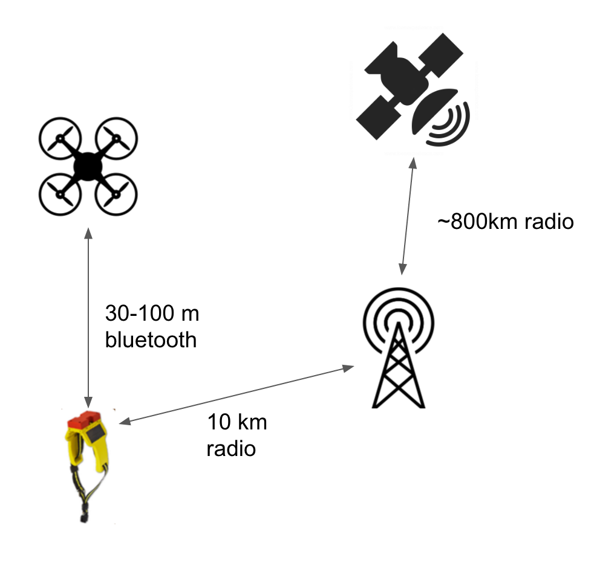
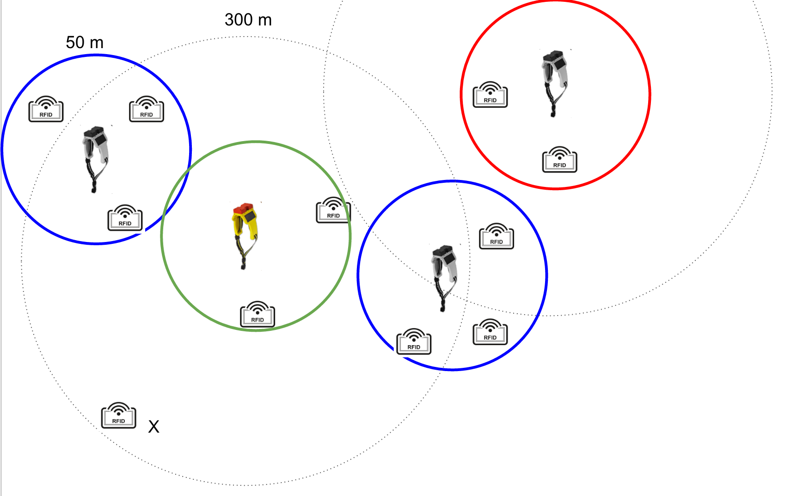

Obroża
W naszej ofercie znajdują się dwa rodzaje obroży: master i slave. Obrożę master posiada ok 4-5% stada. Pozostałe zwierzęta mogą mieć założone albo obroże typu slave, albo kolczyki RFID. Obroża slave ma prostszą konstrukcję i nie posiada modułu GSM ani GPS. Aby ustalić lokalizację zwierzęcia z obrożą slave, musi się ono znajdować z zasięgu innego zwierzęcia z obrożą typu master. Zasięg wykrywania obroży to ok 300 metrów. Obroża master okresowo wysyła za pomocą GSM dane do systemu Smart Rolnik. Dane wysyłane są średnio co 20 sekund. Wartość tę można zmieniać.

Obroża posiada dwa ogniwa fotowoltaczniczne umieszczone po bokach. Przy słonecznej pogodzie ogniwa ładują akumulatory znajnujące się w obroży i przedłużają czas działania obroży. Dzięki zastosowani najnowszych technologii w budowie ogniw fotowoltanicznych i akumulatorów, czas pracy obroży to ok 10 lat.
W obroży znajduje się moduł sBLE - super bluetooth low energy który charakteryzuje się zwiększonym zasięgiem oraz mniejszym poborem energii od tradycyjnego modułu BLE. Dwie obroże wykrywają się wzajemnie w odległości nawet 300 metrów. "Mózgiem" obroży jest mikrokontroler który steruje wszystkimi modułami. Obroża dodatkowo posiada moduł GSM który łączy się z siecią GSM aby regularnie wysyłać dane o zwierzętach do systemu Smart Rolnik. Jeżeli na terenie Twojego pastwiska nie ma zasięgu GSM, istnieje możliwość budowy zpecjalnej anteny która komunikuje się z satelitami IRIDIUM. Obroża może się również komunikować z naszym dronem za pomocą technologii bluetooth. Jednak w tym przypadku jest konieczność okresowego przelotu drona nad terenem.
Na powyższym schemacie zaprezentowany jest sposób komunikacji obroży między sobą. Otoczona zielonym okręgiem obroża typu master zbiera informacje od dwóch obroży typu slave znajdujących się w zasięgu sieci bluetooth (300 metrów). W ten sposób położenie zwierząt posiadających jedynie kolczyki, nie będących w zasięgu zielonego okręgu, ale pozostających w niebieskich okręgach jest znane. Oboża typu slave w czerwonym okręgu jest poza zasięgiem bluetooth obroży master. Może się ona jednak skomunikować z inną obrożą slave do której ma zasięg. Znakiem [X] na schemacie oznaczone jest zwierze nie znajdujące się za sięgu żadnej z obroży. Jego pozycja nie jest znana i wyświetlana jest ostatnia znana pozycja. Jeżeli zwierze znajdzie się z zasięgu którejś obroży, możliwe będzie ustalenie jego pozycji.
Specyfikacja techniczna
| MIN temperatura pracy | -10°C |
| MAX temperatura pracy | +50°C |
| Cena jednostkowa obroży master | 800zł |
| Cena jednostkowa obroży slave | 300zł |
| Maksymalny czas pracy obroży | 10 lat |
| Zasięg sBLE | 300m |
| Szerokość | ok 10cm |
| Długość (możliwość regulacji) | ok 60cm |
| Mikrokontroler | Atmega 2560 |